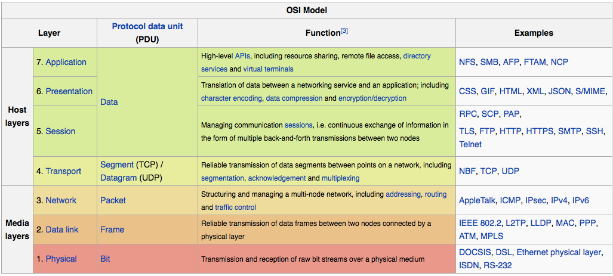

为什么要通信？
交换信息、分工、同步
协议
Serial
异步
I²C
I²C BUS
Arduino Wire Library
TWI Master Bit Bang Driver
SPI
Serial Peripheral Interface Bus
Arduino SPI Library
USB
Protocol、History:USB
hardware:ATMEGA16U2
software:VUSB
网络
通信节点不断的连在一起，形成网络。网络与工业革命。互联网，互联网＋
分层思想
分层方法
OSI
Internet

物理层 Physical Layer
介质 Media
双绞线（网线）,cat5e,cat6,综合布线系统TIA/EIA-568
 光纤 optical faber
光纤 optical faber无线: FCC CCC 2.4g,5.8g
调制
PCM: Pulse-Code ModulationPPM: Pulse-Position Modulation
OOK: On-Off Keying
FSK: Frequency-Shift Keying
BPSK: Binary Phase-Shift Keying
QAM: Quadrature Amplitude Modulation
OFDM: Orthogonal Frequency-Division Multiplexing
FHSS: Frequency-Hopping Spread Spectrum
DSSS: Direct-Sequence Spread Spectrum
UWB: Ultra-WideBand